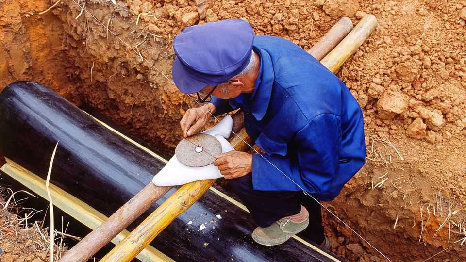

China’s superstitious mayors
Supernatural beliefs lead to lower economic growth

Aug 6th 2026
Feng Shui, China’s ancient practice of geomancy, is all about auspicious surroundings. Meaning “wind, water”, it holds that the arrangement of landscapes, buildings, rooms and even objects around you brings about either good or bad fortune. Mirrors, for instance, should never face the bed, for that will reflect malign energy onto the sleeper. Bedroom doors directly facing the main entrance are a big taboo, since it is a quick route for all the qi, or vital life force, to escape. Roughly half of all Chinese say they believe in feng shui.
It is one thing to organise your home around feng shui. But plenty of officials in China appear to organise the cities they run around it, too—and that is despite the Communist Party’s stated abhorrence of religion and superstition. In 2014 the party secretary of Huainan, in Anhui province, blew up a five-star hotel under construction because it was harmful to his feng shui. In another case from 2015, an official in Guangdong wrestled land from villagers to develop a favourable burial site for himself and his family. Officials spend public funds to reorient office buildings, consult feng shui masters and buy charms, the Central Commission for Discipline Inspection, the party’s internal watchdog, complains. Offences related to superstition made up the biggest share of its punishments last year, according to a recent tally by the Wall Street Journal.
A working paper by Justin Jihao Hong of Boston University and Yuheng Zhao of Renmin University of China shines light on the deleterious effects of superstitious thinking. The researchers find that feng shui beliefs lead mayors to deny investment to parts of their domain they consider to be unlucky, so lowering those areas’ GDP. The more superstitious the mayor, the bigger the effect.
Feng shui holds that certain directions of the compass are considered unfavourable depending on the timing of one’s birth. For their analysis Mr Hong and Mr Zhao recruited professional astrologers to assess the unfavourable directions of all mayors in China in power between 2000 and 2018. With that assessment, they worked out which of the counties that fall under the mayor’s sway would be considered inauspicious in relation to the mayor’s residence. They then measured economic performance in those counties.
The results make for uncanny reading. All else equal, counties that lay in mayors’ unfavourable directions on average experienced 2.3% lower GDP relative to those that lay in other directions. Mayors reduced policy support and investment in those counties, with the effect magnified by firms, who hired fewer employees, and households, who relocated away. Counties’ local economies caught up eventually, usually about three years after the departure of the offending mayor. Still, the overall effect amounted to a loss of 0.1% of GDP a year to China’s economy.
Since geomancy-driven decisions hurt the local economy, they would logically also hurt mayors’ chances of promotion. But perhaps, Mr Hong suggests, feng shui helps to soothe the stressful uncertainty that mayors face about both future policy directions and their own political fates. ■
Subscribers can sign up to Drum Tower, our new weekly newsletter, to understand what the world makes of China—and what China makes of the world.